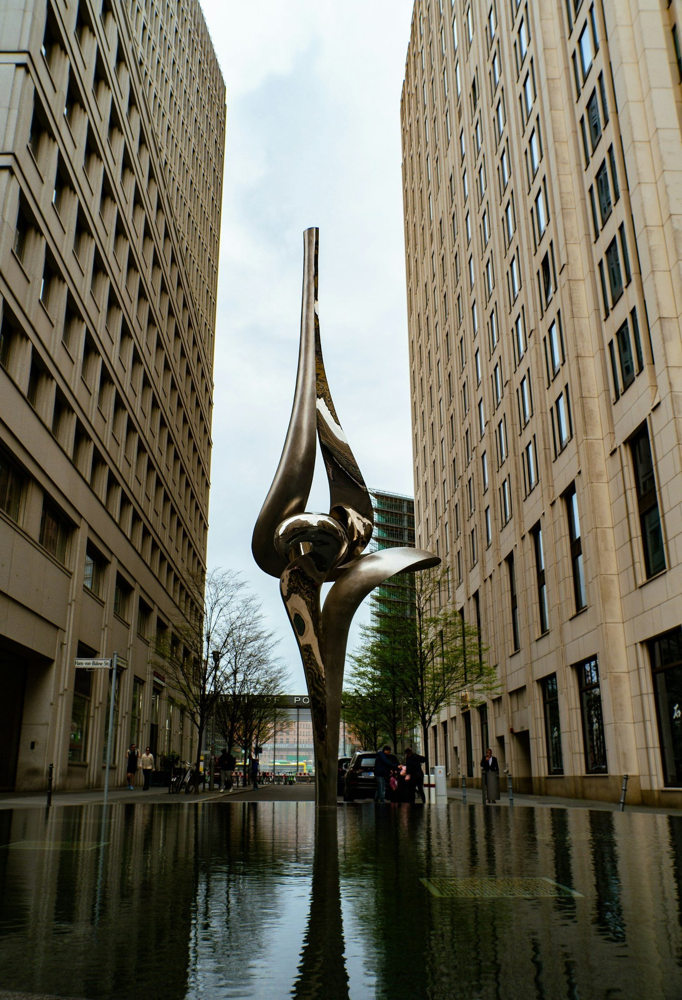

The Four Parts of a High-Performance Life: Mental, Physical, Emotional, and Spiritual
Think of your life like a car.
Read BlogBlog
Thoughts on healing, spiritual life, work, and being human, written by Lisa Batitto with occasional guest contributions.
Browse
Blog
Think of your life like a car.
Read BlogWinter lingers.
Read BlogCareer success can be incredibly satisfying.
Read BlogStress shows up uninvited.
Read BlogFor years, I ignored the tightness in my chest every time I thought about certain people, certain moments.
Read BlogSpiritual awakening doesn’t have to be wrapped in mystery or feel like some unattainable, otherworldly experience.
Read BlogWork stress is real.
Read BlogWork-life balance can feel like a myth.
Read BlogIf you’re someone who thrives on structure and logic, you might think meditation isn’t for you.
Read BlogI’m thrilled to share that I’m now offering Akashic Records readings.
Read BlogRumi’s words have a way of sticking with you. “You were born with wings, why prefer to crawl through life?” is one of those quotes that feels like it’s nudging you gently, but firmly, to rise above.
Read Blog
Healing & Spiritual GrowthSpirituality is such a beautiful journey.
Read BlogServices
Learn about Reiki, Akashic Records, meditation, Work Trauma Coaching, and Corporate Wellness.
View Services